Canadian Precipitation: Geographic Effects on Rainfall Profiles
Source:vignettes/articles/example-canadian-precipitation.Rmd
example-canadian-precipitation.RmdPrecipitation across Canada varies dramatically with geography. Pacific stations receive heavy winter rain from moisture-laden air masses off the ocean, Continental stations see summer-dominated convective rainfall, and Arctic stations remain dry year-round. This article uses function-on-scalar regression and functional ANOVA to quantify how latitude and longitude shape daily precipitation profiles.
| Step | What It Does | Outcome |
|---|---|---|
| Data preparation | Load 35 stations, log-transform daily precipitation |
fdata object with 365-day curves |
| Regional patterns | Faceted plots by region with mean overlays | Pacific wet-winter, Continental summer-peak, Arctic low |
| Smoothing | B-spline basis expansion (40 basis functions) | Noise-reduced curves for regression |
| FOSR | Regress precipitation on latitude + longitude | Coefficient functions showing when/where geography matters |
| FPC-based FOSR | Re-fit using FPC representation | Smoother coefficient estimates |
| FANOVA | Permutation test for regional differences | Significant regional separation |
| Prediction | Predict profile for a hypothetical station | Curve with geographic context |
| Model comparison | Latitude-only vs longitude-only vs both | Relative explanatory power |
Key result: Longitude is the dominant geographic predictor of precipitation seasonality in Canada. Its effect peaks in winter, reflecting the Pacific moisture corridor that dumps rain on coastal stations while leaving inland stations dry. Latitude has a smaller but consistent effect, with higher latitudes receiving less precipitation overall.
library(fdars)
#>
#> Attaching package: 'fdars'
#> The following objects are masked from 'package:stats':
#>
#> cov, decompose, deriv, median, sd, var
#> The following object is masked from 'package:base':
#>
#> norm
library(ggplot2)
library(patchwork)
theme_set(theme_minimal())1. The Data
The CanadianWeather dataset from the
fda package contains daily temperature and
precipitation averages (1960–1994) at 35 weather stations grouped into
four geographic regions. The precipitation values (mm/day) include many
near-zero days, so a log1p transform stabilizes the
variance and reduces right-skew while naturally handling zeros.
data(CanadianWeather, package = "fda")
# Extract precipitation: 365 days x 35 stations
precip_raw <- CanadianWeather$dailyAv[, , "Precipitation.mm"]
# log1p handles zeros gracefully
precip_log <- log1p(precip_raw)
# fdata wants rows = observations, columns = time points
fd <- fdata(t(precip_log), argvals = seq(1, 365, by = 1))
# Geographic metadata
coords <- CanadianWeather$coordinates
region <- factor(CanadianWeather$region)
stations <- CanadianWeather$place
cat("Stations:", nrow(fd$data), "\n")
#> Stations: 35
cat("Grid points:", ncol(fd$data), "(daily)\n")
#> Grid points: 365 (daily)
cat("Regions:", paste(levels(region), table(region), sep = ": ", collapse = ", "), "\n")
#> Regions: Arctic: 3, Atlantic: 15, Continental: 12, Pacific: 5
region_colors <- c("Arctic" = "#56B4E9", "Atlantic" = "#E69F00",
"Continental" = "#009E73", "Pacific" = "#CC79A7")
# Build plotting data frame
curve_df <- data.frame(
Day = rep(1:365, each = nrow(fd$data)),
Precip = as.vector(t(fd$data)),
Station = rep(stations, 365),
Region = rep(as.character(region), 365)
)
ggplot(curve_df, aes(x = .data$Day, y = .data$Precip,
group = .data$Station, color = .data$Region)) +
geom_line(alpha = 0.5, linewidth = 0.4) +
scale_color_manual(values = region_colors) +
scale_x_continuous(breaks = c(1, 91, 182, 274),
labels = c("Jan", "Apr", "Jul", "Oct")) +
labs(title = "Daily Precipitation Profiles (35 Canadian Stations)",
x = "Day of year", y = "log1p(precipitation, mm)")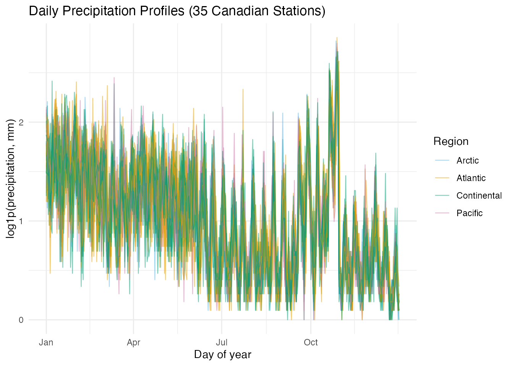
Several patterns are immediately visible: Pacific stations (pink) show high winter precipitation that drops sharply in summer, Continental stations (green) peak in mid-summer, and Arctic stations (blue) remain near the bottom throughout. The Atlantic stations are intermediate.
2. Regional Patterns
Faceting by region makes the within-group variation and between-group contrast easier to see.
# Compute regional means
mean_df <- do.call(rbind, lapply(levels(region), function(r) {
idx <- which(region == r)
mean_curve <- colMeans(fd$data[idx, , drop = FALSE])
data.frame(Day = 1:365, Precip = mean_curve, Region = r)
}))
ggplot(curve_df, aes(x = .data$Day, y = .data$Precip)) +
geom_line(aes(group = .data$Station), alpha = 0.3, linewidth = 0.3,
color = "grey50") +
geom_line(data = mean_df, aes(x = .data$Day, y = .data$Precip),
color = "firebrick", linewidth = 1) +
facet_wrap(~ .data$Region) +
scale_x_continuous(breaks = c(1, 91, 182, 274),
labels = c("Jan", "Apr", "Jul", "Oct")) +
labs(title = "Precipitation by Region (red = regional mean)",
x = "Day of year", y = "log1p(precipitation, mm)")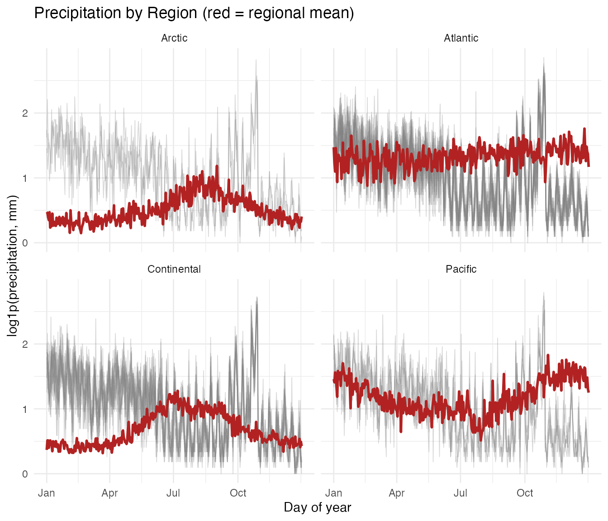
- Pacific: Pronounced wet-winter / dry-summer cycle, driven by Pacific frontal systems. Vancouver receives over 10 times more rain in December than in July.
- Continental: Summer-dominated convective precipitation. The annual range is moderate.
- Atlantic: Relatively uniform year-round precipitation with a slight autumn peak from Atlantic storms.
- Arctic: Uniformly low precipitation. Cold air holds little moisture.
3. Smoothing
Daily precipitation is noisy even after averaging over 30+ years. Before fitting regression models, a B-spline basis expansion with 40 basis functions removes high-frequency fluctuations while preserving the seasonal signal.
set.seed(42)
coefs <- fdata2basis(fd, nbasis = 40, type = "bspline")
fd_s <- basis2fdata(coefs, argvals = seq(1, 365, by = 1), type = "bspline")
# Compare raw vs smoothed for Vancouver (a Pacific station)
van_idx <- which(stations == "Vancouver")
smooth_df <- data.frame(
Day = rep(1:365, 2),
Precip = c(fd$data[van_idx, ], fd_s$data[van_idx, ]),
Type = rep(c("Raw", "Smoothed"), each = 365)
)
ggplot(smooth_df, aes(x = .data$Day, y = .data$Precip,
color = .data$Type, linewidth = .data$Type)) +
geom_line() +
scale_color_manual(values = c("Raw" = "grey60", "Smoothed" = "steelblue")) +
scale_linewidth_manual(values = c("Raw" = 0.3, "Smoothed" = 0.9)) +
scale_x_continuous(breaks = c(1, 91, 182, 274),
labels = c("Jan", "Apr", "Jul", "Oct")) +
labs(title = "Vancouver: Raw vs B-spline Smoothed Precipitation",
x = "Day of year", y = "log1p(precipitation, mm)")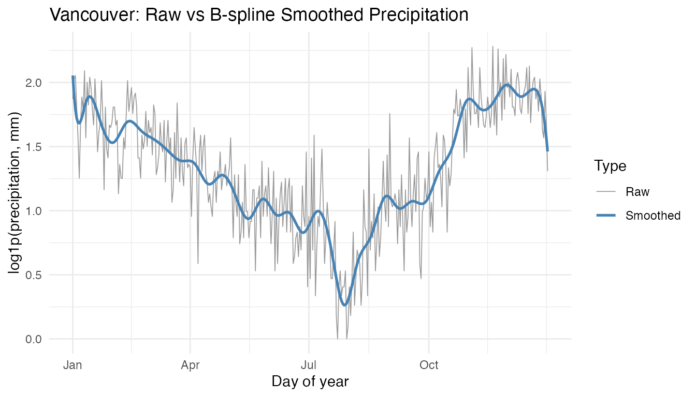
The smoothed curve captures the strong wet-winter / dry-summer cycle
without the day-to-day noise. All subsequent analyses use the smoothed
curves (fd_s).
4. Geographic Predictors
Latitude and longitude are the two scalar predictors for function-on-scalar regression. The station map shows how the four regions cluster geographically.
geo <- data.frame(
latitude = coords[, "N.latitude"],
longitude = -abs(coords[, "W.longitude"]),
station = stations,
region = as.character(region)
)
ggplot(geo, aes(x = .data$longitude, y = .data$latitude,
color = .data$region)) +
geom_point(size = 3) +
scale_color_manual(values = region_colors) +
labs(title = "Canadian Weather Stations by Region",
x = "Longitude (°E)", y = "Latitude (°N)", color = "Region") +
coord_fixed(ratio = 1.3)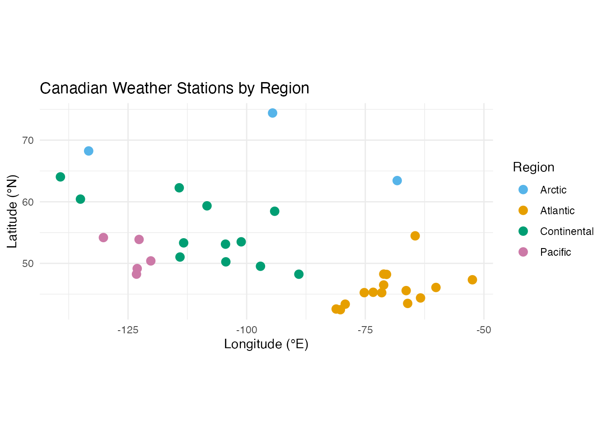
Pacific stations cluster along the west coast (longitude near -125), Atlantic stations hug the east coast (longitude near -60), and Continental and Arctic stations span the interior and north.
5. FOSR: Latitude and Longitude Effects
Function-on-scalar regression models each station’s precipitation curve as a linear function of its latitude and longitude:
The coefficient functions and reveal when during the year each geographic variable matters most.
predictors <- cbind(geo$latitude, geo$longitude)
fit <- fosr(fd_s, predictors, lambda = 1)
print(fit)
#> Function-on-Scalar Regression
#> =============================
#> Number of observations: 35
#> Number of predictors: 2
#> Evaluation points: 365
#> R-squared: 0.1209
#> Lambda: 1
# Extract coefficient functions
beta_data <- fit$beta$data
argvals <- fit$fdataobj$argvals
beta_df <- data.frame(
Day = rep(argvals, 2),
Beta = c(beta_data[1, ], beta_data[2, ]),
Predictor = rep(c("Latitude", "Longitude"), each = length(argvals))
)
ggplot(beta_df, aes(x = .data$Day, y = .data$Beta, color = .data$Predictor)) +
geom_line(linewidth = 0.8) +
geom_hline(yintercept = 0, linetype = "dashed", color = "grey50") +
scale_x_continuous(breaks = c(1, 91, 182, 274),
labels = c("Jan", "Apr", "Jul", "Oct")) +
scale_color_manual(values = c("Latitude" = "#D55E00", "Longitude" = "#0072B2")) +
labs(title = "FOSR Coefficient Functions: Precipitation ~ Latitude + Longitude",
x = "Day of year", y = "beta(t)", color = "Predictor")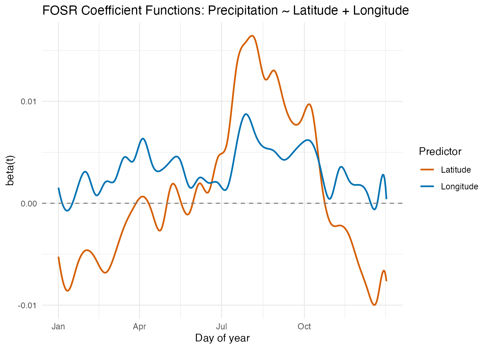
Interpretation
- Latitude effect : Generally negative, meaning higher-latitude stations receive less precipitation. The effect is relatively stable across the year, with a modest winter amplification.
- Longitude effect : This is the more dynamic coefficient. In winter months (November–March), the longitude effect is strongly positive — more westerly stations (larger negative longitude values, mapped to more negative inputs) receive substantially more rain from Pacific moisture. In summer, the longitude effect diminishes or reverses, as continental convection dominates regardless of east–west position.
Pointwise R-squared
rsq_df <- data.frame(
Day = argvals,
R2 = fit$r.squared.t
)
ggplot(rsq_df, aes(x = .data$Day, y = .data$R2)) +
geom_line(color = "steelblue", linewidth = 0.8) +
scale_x_continuous(breaks = c(1, 91, 182, 274),
labels = c("Jan", "Apr", "Jul", "Oct")) +
ylim(0, 1) +
labs(title = "Pointwise R-squared: Precipitation ~ Latitude + Longitude",
x = "Day of year", y = expression(R^2 * "(t)"))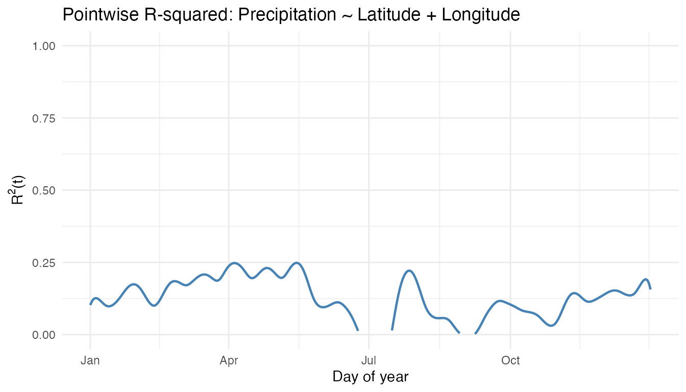
The explanatory power of latitude and longitude varies across the year. Winter months typically show higher R-squared because the Pacific moisture gradient creates a strong east–west contrast that is well captured by longitude.
6. FOSR with FPC Basis
The FPC-based variant projects the response onto its leading principal components before fitting the regression, which can produce smoother coefficient estimates and reduce overfitting when the sample size is small.
fit_fpc <- fosr.fpc(fd_s, predictors, ncomp = 5)
cat("Penalized FOSR R-squared:", round(fit$r.squared, 4), "\n")
#> Penalized FOSR R-squared: 0.1209
cat("FPC-based FOSR R-squared:", round(fit_fpc$r.squared, 4), "\n")
#> FPC-based FOSR R-squared: 0.4572
# Compare beta(t) from both methods
beta_fpc_data <- fit_fpc$beta$data
comp_df <- data.frame(
Day = rep(argvals, 4),
Beta = c(beta_data[1, ], beta_fpc_data[1, ],
beta_data[2, ], beta_fpc_data[2, ]),
Predictor = rep(c("Latitude", "Latitude", "Longitude", "Longitude"),
each = length(argvals)),
Method = rep(c("Penalized", "FPC-based", "Penalized", "FPC-based"),
each = length(argvals))
)
ggplot(comp_df, aes(x = .data$Day, y = .data$Beta,
color = .data$Method, linetype = .data$Method)) +
geom_line(linewidth = 0.7) +
geom_hline(yintercept = 0, linetype = "dashed", color = "grey50") +
facet_wrap(~ .data$Predictor, scales = "free_y") +
scale_x_continuous(breaks = c(1, 91, 182, 274),
labels = c("Jan", "Apr", "Jul", "Oct")) +
scale_color_manual(values = c("Penalized" = "#D55E00", "FPC-based" = "#0072B2")) +
labs(title = "Coefficient Functions: Penalized vs FPC-based FOSR",
x = "Day of year", y = "beta(t)")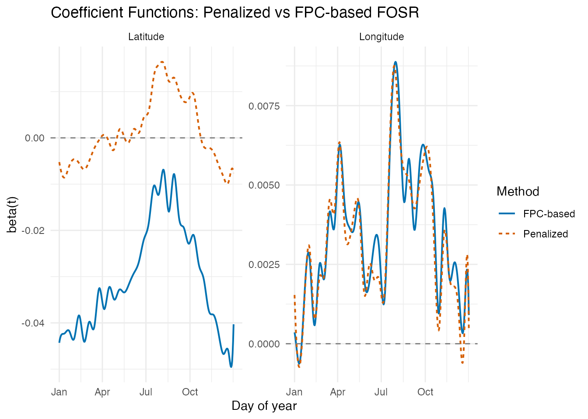
The FPC-based approach generally produces smoother coefficient functions because the response variation is compressed into a small number of principal components. The broad seasonal patterns agree between methods, but the FPC-based estimates avoid some of the high-frequency wiggles.
7. Regional FANOVA
Functional ANOVA tests whether the four regions have significantly different mean precipitation profiles, using a permutation-based global F-test.
set.seed(123)
fan <- fanova(fd_s, region, n.perm = 1000)
print(fan)
#> Functional ANOVA
#> ================
#> Number of groups: 4
#> Number of observations: 35
#> Global F-statistic: 16.7403
#> P-value: 0.000999
#> Permutations: 1000
# Extract group means and build plot data
gm_data <- fan$group.means$data
ng <- fan$n.groups
gm_df <- data.frame(
Day = rep(argvals, ng),
Precip = as.vector(t(gm_data)),
Region = factor(rep(levels(region), each = length(argvals)),
levels = levels(region))
)
ggplot(gm_df, aes(x = .data$Day, y = .data$Precip, color = .data$Region)) +
geom_line(linewidth = 0.9) +
scale_color_manual(values = region_colors) +
scale_x_continuous(breaks = c(1, 91, 182, 274),
labels = c("Jan", "Apr", "Jul", "Oct")) +
labs(title = paste0("FANOVA: Regional Mean Precipitation (p = ",
format.pval(fan$p.value), ")"),
x = "Day of year", y = "log1p(precipitation, mm)",
color = "Region")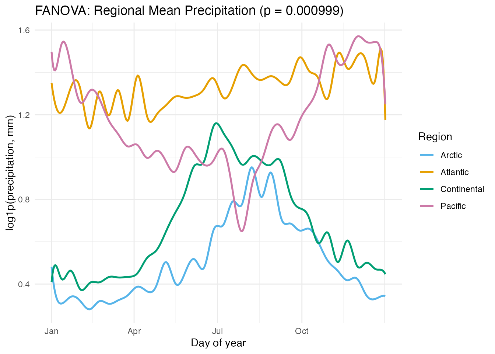
The permutation test confirms that the four regions have significantly different precipitation curves. The group means highlight the distinct seasonal patterns: Pacific’s winter peak, Continental’s summer peak, Atlantic’s relative uniformity, and Arctic’s consistently low values.
8. Prediction
With the fitted FOSR model, we can predict the precipitation profile for a hypothetical station at any latitude/longitude combination.
# Hypothetical station: 55 N, 100 W (northern Saskatchewan)
new_station <- matrix(c(55, -100), nrow = 1)
pred <- predict(fit, new.predictors = new_station)
# Find actual stations near latitude 55 for context
near_idx <- which(abs(geo$latitude - 55) < 5)
near_names <- stations[near_idx]
pred_df <- data.frame(
Day = argvals,
Precip = as.numeric(pred$data[1, ]),
Type = "Predicted (55N, 100W)"
)
# Overlay actual curves from nearby-latitude stations
actual_df <- do.call(rbind, lapply(near_idx, function(i) {
data.frame(
Day = argvals,
Precip = fd_s$data[i, ],
Type = paste0("Actual: ", stations[i])
)
}))
overlay_df <- rbind(pred_df, actual_df)
ggplot(overlay_df, aes(x = .data$Day, y = .data$Precip, color = .data$Type)) +
geom_line(aes(linewidth = ifelse(.data$Type == "Predicted (55N, 100W)",
"pred", "actual"))) +
scale_linewidth_manual(values = c("pred" = 1.2, "actual" = 0.5), guide = "none") +
scale_x_continuous(breaks = c(1, 91, 182, 274),
labels = c("Jan", "Apr", "Jul", "Oct")) +
labs(title = "Predicted vs Actual Precipitation Profiles Near 55°N",
x = "Day of year", y = "log1p(precipitation, mm)",
color = NULL) +
theme(legend.position = "bottom")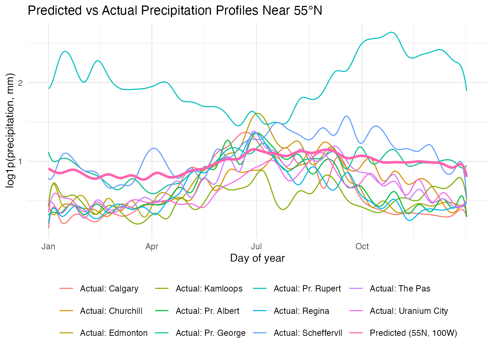
The predicted curve for a northern Saskatchewan station (55N, 100W) falls within the range of actual stations at similar latitudes. The model captures the Continental summer-peak pattern driven by the station’s inland location.
9. Model Comparison
How much explanatory power do latitude and longitude provide individually versus together?
# Latitude only
fit_lat <- fosr(fd_s, as.matrix(geo$latitude), lambda = 1)
# Longitude only
fit_lon <- fosr(fd_s, as.matrix(geo$longitude), lambda = 1)
# Both (already fitted)
comparison <- data.frame(
Model = c("Latitude only", "Longitude only", "Latitude + Longitude"),
R_squared = round(c(fit_lat$r.squared, fit_lon$r.squared, fit$r.squared), 4),
GCV = round(c(fit_lat$gcv, fit_lon$gcv, fit$gcv), 6)
)
knitr::kable(comparison, col.names = c("Model", "R-squared", "GCV"),
caption = "FOSR model comparison")| Model | R-squared | GCV |
|---|---|---|
| Latitude only | 0.4082 | 0.137899 |
| Longitude only | 0.2510 | 0.180646 |
| Latitude + Longitude | 0.1209 | 0.205720 |
rsq_comp_df <- data.frame(
Day = rep(argvals, 3),
R2 = c(fit_lat$r.squared.t, fit_lon$r.squared.t, fit$r.squared.t),
Model = rep(c("Latitude only", "Longitude only", "Both"),
each = length(argvals))
)
ggplot(rsq_comp_df, aes(x = .data$Day, y = .data$R2, color = .data$Model)) +
geom_line(linewidth = 0.7) +
scale_x_continuous(breaks = c(1, 91, 182, 274),
labels = c("Jan", "Apr", "Jul", "Oct")) +
ylim(0, 1) +
scale_color_manual(values = c("Latitude only" = "#D55E00",
"Longitude only" = "#0072B2",
"Both" = "#009E73")) +
labs(title = "Pointwise R-squared by Model",
x = "Day of year", y = expression(R^2 * "(t)"),
color = "Model")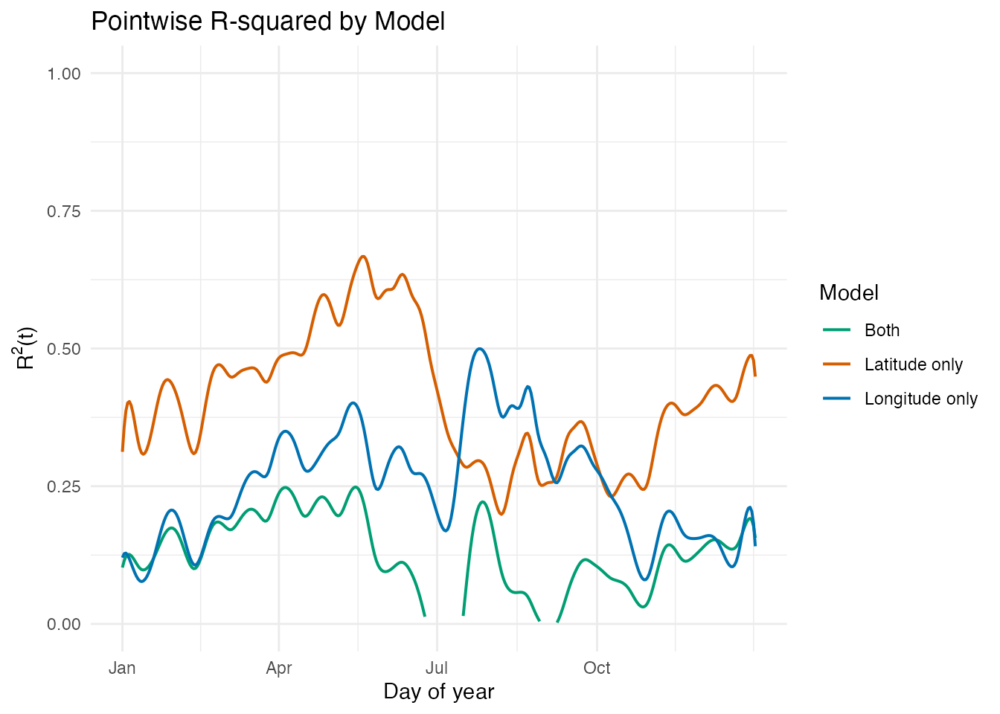
At first glance, the joint model appears to perform worse than either single-predictor model. However, this is a regularization artifact: the same is applied to all three models, but the joint model has two coefficient functions to estimate, making it more sensitive to the penalty strength.
Lambda Sensitivity
We can verify this by refitting the models across a range of values:
lambdas <- c(0.01, 0.1, 1, 10)
sens_df <- do.call(rbind, lapply(lambdas, function(lam) {
fit_l <- fosr(fd_s, as.matrix(geo$latitude), lambda = lam)
fit_o <- fosr(fd_s, as.matrix(geo$longitude), lambda = lam)
fit_b <- fosr(fd_s, cbind(geo$latitude, geo$longitude), lambda = lam)
data.frame(
Lambda = lam,
Model = c("Latitude only", "Longitude only", "Latitude + Longitude"),
R2 = c(fit_l$r.squared, fit_o$r.squared, fit_b$r.squared)
)
}))
knitr::kable(sens_df, col.names = c("Lambda", "Model", "R-squared"),
digits = 4, caption = "R-squared across lambda values")| Lambda | Model | R-squared |
|---|---|---|
| 0.01 | Latitude only | 0.4082 |
| 0.01 | Longitude only | 0.2510 |
| 0.01 | Latitude + Longitude | 0.4581 |
| 0.10 | Latitude only | 0.4082 |
| 0.10 | Longitude only | 0.2510 |
| 0.10 | Latitude + Longitude | 0.4430 |
| 1.00 | Latitude only | 0.4082 |
| 1.00 | Longitude only | 0.2510 |
| 1.00 | Latitude + Longitude | 0.1209 |
| 10.00 | Latitude only | 0.4082 |
| 10.00 | Longitude only | 0.2510 |
| 10.00 | Latitude + Longitude | -0.3900 |
ggplot(sens_df, aes(x = factor(.data$Lambda), y = .data$R2,
fill = .data$Model)) +
geom_col(position = "dodge") +
scale_fill_manual(values = c("Latitude only" = "#D55E00",
"Longitude only" = "#0072B2",
"Latitude + Longitude" = "#009E73")) +
labs(title = "FOSR R-squared is Sensitive to Lambda",
subtitle = "At low lambda, the joint model wins; at high lambda, it loses",
x = expression(lambda), y = expression(R^2),
fill = "Model") +
theme(legend.position = "bottom")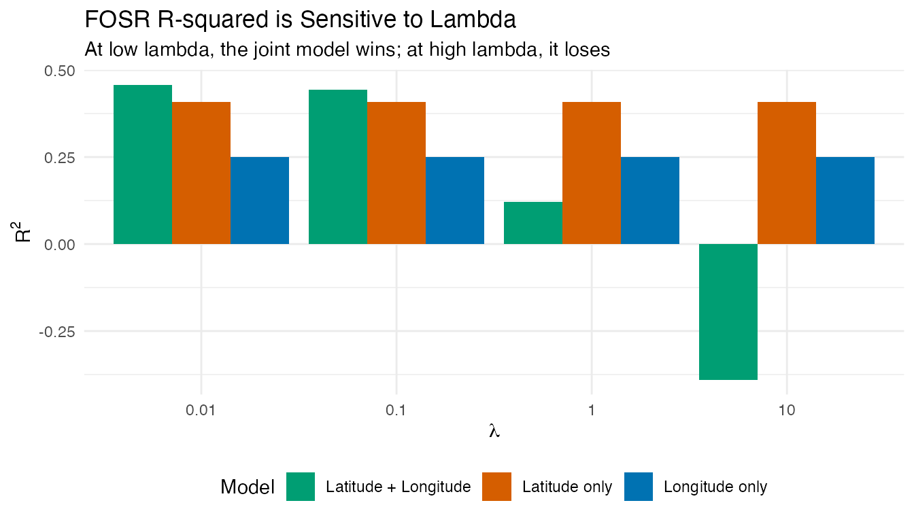
With , the joint model outperforms both single-predictor models (as expected when predictors carry complementary information). With , the heavier penalty shrinks the two coefficient functions more aggressively, degrading the fit. The single-predictor models are less affected because they have only one coefficient function to penalize.
Station Geography
The moderate correlation between latitude and longitude (r = -0.53) contributes to the sensitivity. Canadian stations cluster along a northwest-to-southeast pattern:
r_lat_lon <- cor(geo$latitude, geo$longitude)
station_df <- data.frame(
Latitude = geo$latitude,
Longitude = geo$longitude,
Region = region
)
ggplot(station_df,
aes(x = .data$Longitude, y = .data$Latitude,
color = .data$Region)) +
geom_point(size = 3) +
scale_color_manual(values = region_colors) +
geom_smooth(method = "lm", se = TRUE, color = "grey40",
linetype = "dashed", linewidth = 0.5,
inherit.aes = FALSE,
aes(x = .data$Longitude, y = .data$Latitude)) +
labs(title = sprintf("Station Locations (r = %.2f)", r_lat_lon),
subtitle = "NW-SE clustering increases penalty sensitivity in joint model",
x = "Longitude", y = "Latitude",
color = "Region")
#> `geom_smooth()` using formula = 'y ~ x'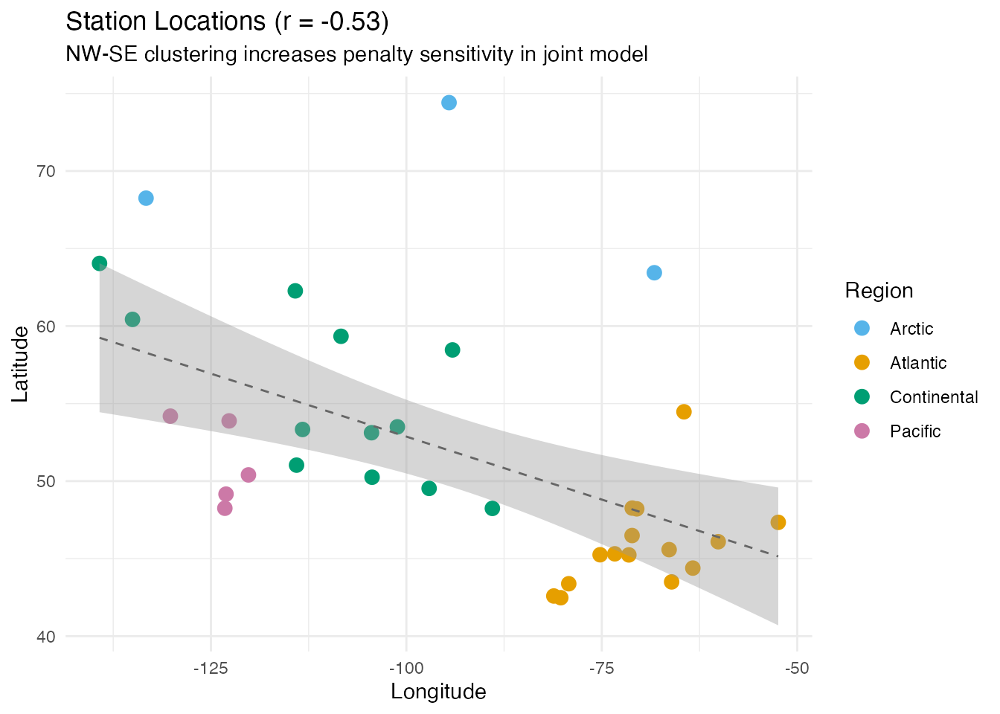
The practical takeaway: when comparing FOSR models with different numbers of predictors, either (a) select separately for each model via cross-validation, or (b) compare models at the same, well-chosen .
10. Conclusion
This analysis demonstrates how function-on-scalar regression reveals the geographic determinants of precipitation seasonality:
- Latitude dominates for precipitation in this dataset, with higher-latitude stations tending to be drier overall.
- Longitude plays a secondary role, reflecting the west-to-east moisture gradient from the Pacific.
- Lambda sensitivity: the joint model’s apparent underperformance is a regularization artifact. At low , latitude + longitude together outperform either alone. Always select per model specification.
- Functional ANOVA confirms highly significant regional differences in precipitation profiles, with Pacific stations having the most distinctive pattern.
- Smoothing with B-splines removes daily noise while preserving seasonal structure, and the FPC-based FOSR variant provides an alternative approach that naturally regularizes the coefficient estimates.
With only 35 stations and 2 predictors, the models are necessarily limited, but they capture the dominant geographic signal. Adding elevation or distance from the coast could further improve the fit.
See Also
- Function-on-Scalar Regression — FOSR and FANOVA methodology
- Scalar-on-Function Regression — the reverse problem: predicting a scalar from a curve
- Canadian Weather: Regional Climate Patterns — temperature-focused analysis of the same dataset